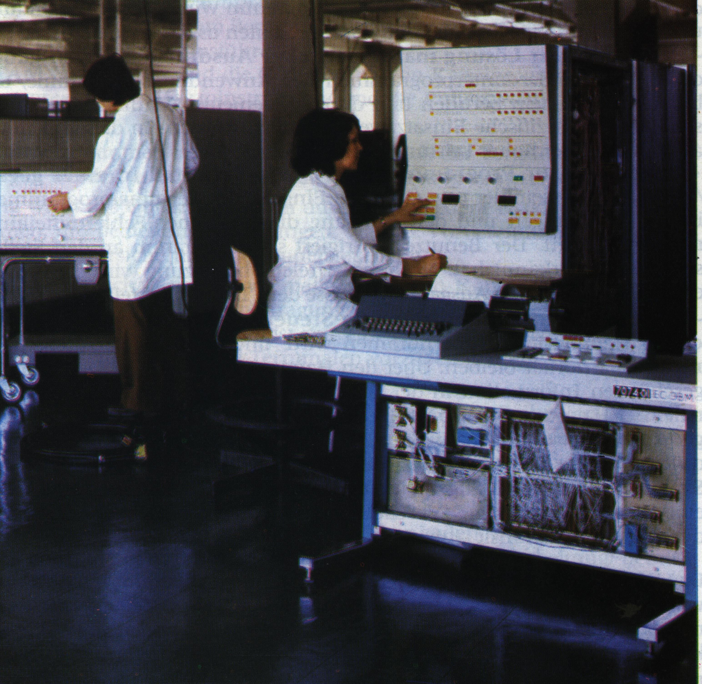

ЕС-1020-Б
Разработчици: Главен конструктор - Пржиялковский В.В. Заместник-главен конструктор - Смирнов Г.Д. Основни конструктори: Мальцев Н.А., Волков Л.И., Чалайдюк М.Ф., Качков В.П., Асцатуров Р.М. Организация - разработчик - НИИЭВМ г. Минск. МРП СССР Заводи-производители: Мински завод ЕИМ им. Г.К, Орджоникидзе МРП СССР, Брестски електромеханически завод МРП СССР, Български завод ЗИТ г. София. Година за край на разработката - 1971 год. Година за начало на производството - 1971 год. Година за край на производството - 1975 год. Област на приложение : Изчислителни центрове на предприятия, обединения, ведомства. Научно-технически и планово-икономически задачи. Количество на произведените машини: Мински завод-595 бр. Брестски завод- 60 бр. Завод ЗИТ - около 100 бр. Структура на ЕИМ : Архитектура ЕС ЕИМ- серия 1.(други модели - ЕС-1010, ЕС-1021, ЕС-1030, ЕС-1040, ЕС-1050) Разрядност - 8 разряда. Набор команди - 144 команди стандартен набора команди от ЕС ЕИМ-серия 1. Обем на оперативната памет на ферити - 64- 256 Кбайта. Средства за пряко управление за създаване двумашинни комплекси. Универсален интерфейс за връзка с външни устройства. Три селекторни канала. Дискова подсистема на сменни магнитни дискове с обем 7.25 Мбайт. Лентова подсистема с плътност на записа 32 имп. на мм.
Процесор ЕС-1020-Б

Елементна база - интегрални микросхеми серия 155 ( Логика-2). Конструкция - три стандартни шкафа ЕС ЕИМ-1, шкаф процесор, шкаф захранване, шкаф феритно ОЗУ. във всеки шкаф 2 отварящи се рами с два панела всяка. Размери на шкафа: 1200х750х1600 мм. Типови елементи за замяна (ТЕЗ) с размери 140х150 мм. Въздушно охлаждане с помоща на стандартни вентилатори ЕС ЕИМ. Стандартни блокове захранване за ЕС ЕИМ. Технология: Двуслойни печатни платки с метализация. Монтажа на панелите се прави чрез завиване. Механизирана подготовка и монтаж на елементите върху платките. Запояване със спойка вълна. Полуавтоматизиран монтаж на панелите и автоматизиран контрол на монтажа на панелите на рамите. Стендово оборудване, позволявщо да се механизират операции по монтажа и контролирането. Програми. С машините се доставяла дискова операционна система (ДОС), включваща в себе си освен управляващи програми, осигуряващи одновременно изпълнение на три работни програми, компилатори от Асемблер, РПГ, Фортран-4, Кобол, ПЛ-1,а също системни обслужващи програми за системата за тестване и контрол на устройствата. Технически характеристики. Производителност - 20 хил. операции в секунда по смес Гибсон-3. Заемана площ на основен комплект - 80-100 кв. метра. Работна температура - 5-40°С. Мощност, употребявана от процесора - 4.5 кW. Особености на ЕИМ ЕС-1020: Първата ЕИМ от Единната система ЕИМ на социалистическия лагер. Първата ЕИМ, обеспечаваща пълна информационна и програмна съвместимост с широко распространените западни ЕИМ за общо предназначение.Пълна програмна съвместимост с IBM 360.